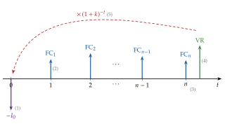
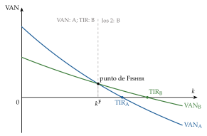
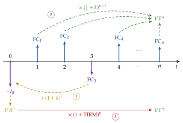
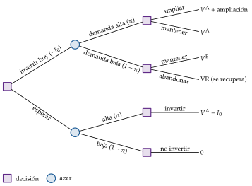
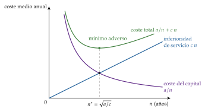
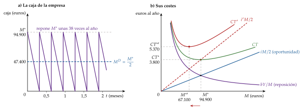
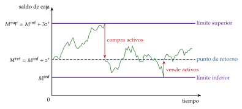
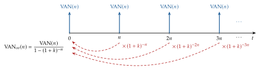

Tema 3.B.2
La empresa y las decisiones de inversión. Diferentes criterios de valoración de proyectos. Rentabilidad, riesgo y coste del capital.
Valoración de proyectos (VAN, TIR, TIRM, payback, opciones reales), tesorería de Baumol y Miller-Orr, rentabilidad, riesgo y coste del capital (CAPM, WACC).
Exclusivo Material exclusivo de victorgutierrezmarcos.es y la app Oposición TCEE · DCE. Puedes usarlo libremente para tu estudio personal. No se autoriza su incorporación a otras plataformas, aplicaciones o servicios. Condiciones de uso.
Introducción
Enganche:
«Más vale un hoy que dos mañanas», dice el refrán. Toda inversión le lleva la contraria: renuncia a un euro hoy a cambio de más euros mañana. La pregunta es cuántos más hacen falta.
En junio de 2023, Intel acordó con el Gobierno alemán construir 2 fábricas de chips en Magdeburgo por más de 30.000 millones de euros, con 9.900 millones de ayuda pública comprometida. En septiembre de 2024 aplazó el proyecto unos 2 años y en julio de 2025 renunció a él para mejorar la rentabilidad de su capital. Entre medias no cambió la fábrica: cambiaron los flujos de caja que se esperaban, el coste de financiarlos y el valor de esperar a saber más.
Detrás está la pregunta de esta exposición: ¿cómo decide una empresa qué proyectos acometer, y qué rentabilidad tiene que exigirles?
Relevancia:
Aunque el análisis es el de una empresa, sus consecuencias son agregadas. La inversión es el componente más volátil de la demanda [ver tema 3.A.34] y la vía por la que el ahorro se convierte en capital y en crecimiento a largo plazo [ver tema 3.A.43]. En España, las sociedades no financieras invirtieron en 2025 unos 218.000 millones de euros, casi el 13 % del PIB.
Una economía es la suma de millones de decisiones de inversión: cuanto mejores sean los criterios con que se toman, la información con que se cuenta y la formación de quienes deciden, mejor se asigna el ahorro, más productiva es la economía y más competitiva fuera.
Y los mismos criterios sirven para evaluar la inversión pública, con una tasa social de descuento en lugar del coste del capital de una empresa [ver tema 4.B.6].
Contextualización:
Para la teoría microeconómica, la empresa combina factores para producir y maximiza su beneficio [ver tema 3.A.12]. Para las finanzas corporativas, es un conjunto de decisiones de inversión que exigen sus correspondientes decisiones de financiación. Según Friedman (1970),1 la responsabilidad social de la empresa es aumentar sus beneficios; las finanzas lo traducen en maximizar el valor de la empresa para sus accionistas: el valor es el beneficio de todos los periodos, descontado y ajustado por el riesgo.2
Ese objetivo se concreta en 3 decisiones: de inversión, la de esta exposición; de financiación, cómo y de qué fuentes obtener los fondos y cómo remunerar a quienes los aportan [ver tema 3.B.3], y de dimensión, cuánto y cómo crece la empresa [ver tema 3.B.4].
Definiciones. Una inversión es el compromiso actual de dinero o de otros recursos con la expectativa de obtener beneficios en el futuro;3 tiene, por tanto, 2 dimensiones: el tiempo, porque se renuncia a algo hoy a cambio de algo mañana, y el riesgo, porque lo de mañana es incierto.
Su rentabilidad es lo que gana por cada euro comprometido; su riesgo, la dispersión de lo que puede ganar, y su coste del capital, la rentabilidad que exigen quienes la financian, que es la que dejan de ganar en otra inversión de igual riesgo.
Los activos reales (terrenos, edificios, máquinas, conocimiento) producen los bienes y servicios: de ellos depende la capacidad productiva de la economía. Los activos financieros (acciones, bonos, préstamos) son derechos sobre las rentas que generan los activos reales; no añaden capacidad productiva, sino que reparten esas rentas entre quienes los financian.4
Nos centramos en las sociedades no financieras y en su inversión más común, la de activos reales, con una mirada microeconómica: no la formación bruta de capital de un país [ver tema 3.A.34], sino la decisión de una empresa sobre un proyecto concreto.
Historia. La teoría de la decisión de inversión nace en la economía y se convierte en técnica de gestión en la segunda mitad del siglo XX.
Fisher (1930) muestra que, con un mercado de capitales perfecto, la empresa debe invertir mientras la tasa de rendimiento sobre el coste supere el tipo de interés, y que esa decisión no depende de las preferencias de sus dueños (la separación de Fisher). Keynes (1936) llama a la misma tasa eficiencia marginal del capital [ver tema 3.A.34].
Dean (1951) lleva el descuento de flujos a la gestión de la empresa con el nombre de presupuesto de capital (capital budgeting); Lorie y Savage (1955) y Hirshleifer (1958) señalan los problemas de la TIR y asientan el VAN como el criterio coherente con maximizar el valor.
La economía financiera pone precio al riesgo [ver tema 3.B.23] y separa la inversión de la financiación [ver tema 3.B.3]; desde Myers (1977) y Dixit y Pindyck (1994), las opciones reales valoran la posibilidad de esperar, ampliar o abandonar.
Problemática:
¿Qué proyectos crean valor y con qué criterio se eligen entre ellos?
¿En qué invierte la empresa (máquinas, existencias, tesorería, activos financieros, personas) y cómo se valora cada inversión?
¿Qué rentabilidad hay que exigir a un proyecto según su riesgo? Es decir, ¿cuál es el coste del capital y cómo se estima?
Estructura:
La exposición sigue el orden del título:
en el bloque I, los criterios de valoración: cómo se decide si un proyecto crea valor, con una tasa de descuento dada, con y sin riesgo;
en el bloque II, los mismos criterios aplicados a inversiones concretas: la renovación de equipos, las existencias y la tesorería, los intangibles, los activos financieros y el capital humano;
en el bloque III, la rentabilidad, el riesgo y el coste del capital: de dónde sale la tasa a la que se descuentan los proyectos.
El orden no es casual: primero se aprende a decidir con una tasa dada; después se aplica a lo que compra la empresa, y al final se ve qué tasa poner, que es la que convierte el riesgo en un coste.
3.B.2. La empresa y las decisiones de inversión. Diferentes criterios de valoración de proyectos. Rentabilidad, riesgo y coste del capital
Introducción2′30″
I. Métodos generales de valoración y selección de inversiones: ¿cómo invierten las empresas?10′30″
1. Variables integrantes de una inversión
2. Principios fundamentales de valoración
3. Métodos de valoración: estáticos; dinámicos (VAN, TIR, TIRM, índice); con riesgo; opciones reales
4. ¿Qué se utiliza en la práctica?
II. Métodos de valoración de otros proyectos de inversión: ¿en qué invierten las empresas?6′30″
1. Inversiones en activos reales: no corriente (retiro, MAPI), corriente (existencias, tesorería), intangibles
2. Inversiones financieras
3. Inversión en capital humano
III. Rentabilidad, riesgo y coste del capital: ¿cuánto debe rendir la inversión?9′30″
1. Rentabilidad
2. Riesgo
3. Coste del capital
Conclusión1′
Reparto del cante: introducción, 2′30″; I, 10′30″ (apertura, 0′30″; I.1, 1′15″; I.2, 0′45″; I.3, 7′30″: estáticos, 0′30″, VAN, 1′15″, TIR, 0′45″, comparación, 1′30″, TIRM e índice, 0′45″, tasa ajustada y equivalente cierto, 1′, sensibilidad, 0′15″, y opciones reales, 1′30″; I.4, 0′30″); II, 6′30″ (apertura, 0′45″; II.1, 4′30″: activo no corriente, 1′15″, activo corriente, 3′, e intangibles, 0′15″; II.2, 0′30″; II.3, 0′45″); III, 9′30″ (apertura, 0′15″; III.1, 1′45″; III.2, 2′; III.3, 5′30″), y conclusión, 1′. La introducción y la conclusión llevan el refrán del enganche, «más vale un hoy que dos mañanas». El VAN (1) es la función clave desde el apartado I.3 hasta el final. En el bloque I, la línea de flujos con las 5 variables (figura 1) y el VAN de 2 proyectos frente a la tasa, con las TIR y el punto de Fisher (gráfico 1), imprescindible, y la tabla 2. En el bloque II, el coste total de Baumol y Tobin en U (gráfico 4), imprescindible, con \(M^*\) y la fórmula de Wilson debajo. En el bloque III, el esquema de las 3 vías para estimar el coste del capital y el WACC (4), que es la \(k\) del VAN: la tasa que faltaba. Los dichos van junto a su concepto: «borrón y cuenta nueva» (costes hundidos), «no por mucho madrugar amanece más temprano» (opción de esperar) y «en el término medio está la virtud» (Baumol-Tobin). Las notas al pie, las cajas grises y los anexos son para las preguntas del tribunal.
Notación. \(I_0\) es el desembolso inicial; \(\mathrm{FC}_t\), el flujo de caja del periodo \(t\) (el flujo de caja libre del proyecto); \(\mathrm{VR}\), el valor residual; \(n\), la vida del proyecto, y \(k\), la tasa de descuento de un proyecto, cualquiera que sea, que en el bloque III se concreta en el coste del capital: \(r_E\) el de los fondos propios, \(r_D\) el de la deuda, \(r_A\) el de los activos (o del proyecto) y \(\mathrm{WACC}\) el coste medio ponderado de la empresa, que solo es la \(k\) correcta para proyectos de su mismo riesgo. \(r_f\) es la rentabilidad del activo sin riesgo y \(\lambda_M\equiv\mathbb{E}[r_M]-r_f\) la prima de riesgo del mercado; \(\beta_A\) y \(\beta_E\), las betas de los activos y de las acciones. \(V_E\), \(V_D\) y \(V=V_E+V_D\) son los valores de mercado de los fondos propios, de la deuda y de la empresa; \(L=V_D/V\), el peso de la deuda, y \(t_{IS}\), el tipo del impuesto sobre sociedades. \(\mathbb{E}[\cdot]\) es la esperanza y \(\sigma\) la desviación típica. Los proyectos se llaman A y B. Son locales: \(k^{\mathrm F}\), la tasa del punto de Fisher; \(VA^{-}\) y \(VF^{+}\) en la TIR modificada; \(\xi_t\) y \(\alpha_t\) en el equivalente cierto (\(\alpha_t\) no es el alfa de Jensen); \(\mathrm{VAN}(n)\), \(\mathrm{VAN}_\infty(n)\) y \(\mathrm{VAE}(n)\) en la renovación de equipos; \(Q\) y \(c_a\) en el lote económico; \(b\), \(Y\), \(i\) y \(M\) en el modelo de Baumol y Tobin, con \(M^{\mathrm{inf}}\), \(M^{\mathrm{sup}}\), \(M^{\mathrm{ret}}\) y \(z^*\) en el de Miller y Orr, como en la demanda de dinero [ver tema 3.A.35].
I. Métodos generales de valoración y selección de inversiones: ¿cómo invierten las empresas?
En el cante (10′30″). La apertura, de palabra (0′30″): la conclusión anticipada y los 5 pasos del proceso, sin escribirlos. I.1, 1′15″: la línea de flujos de la figura 1, numerando las 5 variables; el flujo de caja libre, de palabra; la tabla 1 no se canta. I.2, 0′45″: los 6 principios nombrados, con «borrón y cuenta nueva» junto a los costes hundidos y «nominal con nominal». I.3, 7′30″: los estáticos de palabra (0′30″); el VAN (1), función clave hasta el final (1′15″); la TIR en una línea (0′45″); el gráfico 1 por capas y la tabla 2 de 3 columnas (1′30″); la TIRM y el índice con el racionamiento, de palabra (0′45″); la tasa ajustada y el equivalente cierto, con las 2 fórmulas en una línea cada una (1′); la sensibilidad, de palabra (0′15″); las opciones reales con la regla (2) en una línea bajo el VAN, el ejemplo en una frase y «no por mucho madrugar amanece más temprano» (1′30″). I.4, 0′30″: las cifras de la encuesta, de palabra. La figura 2 y el árbol del gráfico 2 son de apoyo.
Conclusión anticipada: el criterio coherente con maximizar el valor de la empresa es el valor actual neto, el VAN; los demás son aproximaciones útiles, pero pueden equivocarse.
La decisión de inversión es un proceso, el presupuesto de capital, con 5 etapas:
identificar oportunidades, que suelen venir de abajo (las plantas, los equipos comerciales);
estimar sus flujos de caja, su riesgo y la tasa a la que descontarlos;
evaluarlas con un criterio y seleccionarlas, encajándolas en el presupuesto anual y en la estrategia;
aprobar y ejecutar el proyecto;
y revisar sus resultados después (la auditoría ex post), para aprender y corregir los sesgos de las previsiones.
El riesgo principal del proceso no es de cálculo, sino de incentivos: quien propone el proyecto tiende a ser optimista, y la dirección lo compensa con tasas de corte altas o con presupuestos rígidos [ver tema 3.A.13].
Nexo: este bloque se ocupa de los pasos 2 y 3, en 4 etapas: qué variables definen un proyecto (I.1); qué principios deben seguirse al calcularlas (I.2); qué métodos permiten decidir (I.3), y cómo deciden de verdad las empresas (I.4).
I.1. Variables integrantes de una inversión
Una inversión se describe por la corriente de flujos de caja que genera a lo largo del tiempo (figura 1), con 5 variables:5
el desembolso inicial, \(I_0\): lo que hay que pagar para ponerla en marcha, el precio de compra más el transporte, la instalación y la formación; va ligado al proyecto, y lo que ya se ha pagado y no se recupera (un coste hundido) no cuenta;
los flujos de caja, \(\mathrm{FC}_t\): los cobros menos los pagos que genera el proyecto cada periodo, normalmente cada año, que es la duración del ejercicio económico [ver tema 3.B.1]. Se calculan como el flujo de caja libre del proyecto, como si no tuviera deuda [ver tema 3.B.4]: \[\mathrm{FC}_t=\mathrm{EBIT}_t\,(1-t_{IS})+\text{amortizaciones}_t-\mathrm{CAPEX}_t-\Delta\mathrm{NOF}_t,\] el resultado de explotación después de impuestos, más la amortización (que es un gasto, pero no un pago), menos lo que se invierte en activo fijo (\(\mathrm{CAPEX}\)) y en necesidades operativas de fondos (\(\Delta\mathrm{NOF}\));
la duración, \(n\): la vida del proyecto, que no se conoce con certeza hasta que acaba y se estima con su vida útil (mientras sus activos funcionan con normalidad), su vida tecnológica (hasta que quedan obsoletos) y su vida económica (la que maximiza su VAN, II.1.2);
el valor residual, \(\mathrm{VR}\): lo que se obtendría al final por vender lo que queda. Es también una forma de tratar la incertidumbre sobre la duración: se estiman los flujos de unos años y, a partir de ahí, se añade el valor residual;
y la tasa de descuento, \(k\): la rentabilidad que se deja de ganar en otra inversión de igual riesgo. Cuál es y cómo se estima se ve en el apartado III.3.

Fuente: elaboración propia.
Tipos de inversión según el signo de sus flujos (tabla 1):
simples o convencionales: tras el desembolso, todos los flujos son positivos (por eso, un solo cambio de signo);
no simples: algún flujo posterior es negativo (una gran reparación, el desmantelamiento de una central). Entre ellas, Teichroew, Robichek y Montalbano (1965) distinguen las puras, en las que el saldo acumulado del proyecto nunca es positivo antes del final (el proyecto es siempre una inversión), de las mixtas, en las que en algún momento lo es (el proyecto financia a la empresa durante un tiempo).
| Tipo | Ejemplo (\(t=0,1,2\)) | Cambios de signo | TIR |
|---|---|---|---|
| Simple | \(-100\), \(+60\), \(+60\) | 1 | Una: 13,1 % |
| No simple pura | \(-100\), \(-20\), \(+150\) | 1 | Una: 12,9 % |
| No simple mixta | \(-100\), \(+230\), \(-132\) | 2 | Dos: 10 % y 20 % |
Fuente: elaboración propia a partir de Teichroew, Robichek y Montalbano (1965). En la mixta, al 10 % el saldo del proyecto tras el primer año es positivo (\(-110+230=120\)): durante ese año el proyecto financia a la empresa.
I.2. Principios fundamentales de valoración
Una vez definido el proyecto, hay que decidir qué flujos entran en él. Algunos principios valen para cualquier proyecto:
Razonar en flujos de caja, no en ingresos y gastos contables: estos no recogen las necesidades operativas de fondos e incluyen partidas que no son cobros ni pagos, como la amortización, útil para ver cómo afecta la inversión a la cuenta de resultados, pero no para decidirla. Cuentan los flujos positivos y los negativos.
Razonar en términos incrementales: cuentan solo los flujos que cambian si se hace el proyecto, para medir lo que aporta al valor de la empresa. Los costes hundidos, ya pagados se haga o no, no cuentan: «borrón y cuenta nueva».6
Razonar en términos de oportunidad: lo que aporta una decisión se mide frente a las alternativas, no por separado. Quien tiene un solar y piensa construir un hotel debe compararlo con construir un aparcamiento, alquilarlo, venderlo o esperar a que suba de precio.
Separar la inversión de la financiación: los flujos del proyecto no restan intereses ni dividendos; la financiación entra por la tasa de descuento, que ya recoge lo que exigen accionistas y acreedores (III.3). Si no, se contaría 2 veces.
Tener en cuenta los impuestos: los flujos son después de impuestos, porque lo que paga la empresa al fisco no está disponible para sus financiadores.
Ser coherente: la misma moneda y los mismos supuestos en todos los flujos, y los flujos nominales descontados con una tasa nominal o los reales con una real. Mezclarlos infla o desinfla el VAN tanto más cuanto mayor es la inflación y más largo el proyecto.
I.3. Métodos de valoración
Con los flujos ya calculados, los métodos de valoración dicen si conviene hacer un proyecto (efectuación) y, si hay varios, en qué orden (jerarquización). Interesan los que llevan a maximizar el valor de la empresa.
I.3.1. Métodos aproximados o estáticos
Los métodos estáticos no tienen en cuenta cuándo llega cada flujo: suman cantidades de momentos distintos como si se cobraran a la vez.
El flujo neto de caja por unidad monetaria comprometida es \(\sum_{t=1}^{n}\mathrm{FC}_t/I_0\). Interesa el proyecto si es mayor que 1, porque recupera el desembolso; solo lo que pasa de 1 es rentabilidad en sentido estricto.
El plazo de recuperación (payback) es el tiempo que se tarda en recuperar el desembolso inicial. Con flujos constantes, \(\mathrm{FC}_t=\mathrm{FC}\) para todo \(t\), es \(\textit{payback}=I_0/\mathrm{FC}\).
Valoración de los métodos estáticos:
su ventaja es la sencillez, y el payback da una idea de la liquidez y del riesgo del proyecto: cuanto antes se recupera, menos tiempo se está expuesto;
pero suman cantidades heterogéneas, sin tener en cuenta que un euro hoy vale más que uno mañana (por impaciencia, por el riesgo y porque se puede reinvertir), y no usan el coste del capital;
el payback, además, ignora los flujos posteriores a la recuperación: prefiere un proyecto que recupera pronto y luego no da nada a otro que tarda más pero rinde durante décadas, y sesga la empresa hacia el corto plazo. El payback descontado, el tiempo hasta que los flujos descontados igualan \(I_0\), corrige el primer problema, pero no este.
I.3.2. Métodos dinámicos
Los métodos dinámicos corrigen ese defecto: descuentan los flujos para expresar en euros de hoy cantidades que llegan en momentos distintos. Los principales son el VAN y la TIR.
a) El valor actual neto (VAN)
El valor actual neto es el valor actual de los flujos de caja que genera el proyecto, descontados a la tasa \(k\), menos el desembolso inicial:
\[\mathrm{VAN}=-I_0+\sum_{t=1}^{n}\frac{\mathrm{FC}_t}{(1+k)^t}+\frac{\mathrm{VR}}{(1+k)^n}\tag{1}\]
Mide cuánto aumenta el valor de la empresa si se hace el proyecto.
Regla de decisión:
aceptar los proyectos con \(\mathrm{VAN}>0\): rinden más que su coste del capital y aumentan el valor de la empresa;
entre proyectos excluyentes, elegir el de mayor VAN; si son independientes y no falta capital, hacer todos los de VAN positivo.
Ventajas: usa todos los flujos y su calendario, y el riesgo a través de \(k\); es aditivo (el VAN de 2 proyectos es la suma de sus VAN), y es el criterio coherente con maximizar el valor de la empresa.
Limitaciones:
depende de una tasa \(k\) que no se observa y hay que estimar (III.3.2);
supone que la tasa es la misma cada año y que la empresa puede prestar y endeudarse a \(k\). Por eso se dice que el VAN «supone que los flujos se reinvierten a \(k\)»: más que un supuesto discutible, es que \(k\) es lo que la empresa puede obtener con su dinero en otro uso de igual riesgo, y por eso es la hipótesis correcta;
da un número absoluto, que no dice cuánto se gana por euro invertido (lo da el índice del VAN, más abajo);
y trata la inversión como una decisión de ahora o nunca, sin la posibilidad de esperar o de cambiar el proyecto (I.3.4).
b) La tasa interna de rentabilidad (TIR)
La tasa interna de rentabilidad es la tasa de descuento que anula el VAN: \[-I_0+\sum_{t=1}^{n}\frac{\mathrm{FC}_t}{(1+\mathrm{TIR})^t}+\frac{\mathrm{VR}}{(1+\mathrm{TIR})^n}=0.\] Es la rentabilidad del proyecto por euro invertido y periodo; Keynes (1936) la llamó eficiencia marginal del capital [ver tema 3.A.34].7
Regla: aceptar si \(\mathrm{TIR}>k\); la TIR es el coste del capital máximo que soportaría el proyecto. Entre proyectos, preferir el de mayor TIR.
Ventajas: un solo número, en porcentaje, comparable entre proyectos de distinto tamaño; para calcularla no hace falta conocer \(k\), aunque para decidir sí.
Limitaciones: supone que los flujos intermedios se reinvierten a la propia TIR, no a \(k\); con flujos no convencionales puede haber varias TIR o ninguna,8 y, como medida relativa, puede ordenar mal proyectos excluyentes.
c) Comparación del VAN y la TIR
Para aceptar o rechazar un proyecto simple, los 2 criterios coinciden: como el VAN cae al subir la tasa de descuento, \(\mathrm{VAN}(k)>0\) si y solo si \(\mathrm{TIR}>k\).
Para ordenar proyectos excluyentes, pueden no coincidir. Ocurre cuando las curvas del VAN de 2 proyectos se cortan: la tasa del corte, \(k^{\mathrm F}\), es el punto de Fisher, en el que los 2 proyectos tienen el mismo VAN (gráfico 1).9
Las curvas se cortan cuando los proyectos tienen distinta escala (el mayor da más VAN y menos TIR) o distinto calendario (el que cobra más tarde es más sensible a la tasa: su VAN es mayor con tasas bajas y menor con tasas altas).
Sean 2 proyectos que cuestan 100: A cobra 144 dentro de 2 años (\(\mathrm{TIR}_{\mathrm A}=20\) %) y B cobra 125 dentro de uno (\(\mathrm{TIR}_{\mathrm B}=25\) %). Sus VAN se igualan en \(k^{\mathrm F}=144/125-1=15{,}2\) %. Con \(k=8\) %, \(\mathrm{VAN}_{\mathrm A}\approx23{,}5\) y \(\mathrm{VAN}_{\mathrm B}\approx15{,}7\): el VAN elige A y la TIR, B. Con \(k>k^{\mathrm F}\), los 2 eligen B (tabla 2).
¿A cuál hacer caso? Al VAN: mide en euros lo que gana la empresa. La TIR premia la rentabilidad porcentual y puede preferir un proyecto pequeño o corto muy rentable a uno grande o largo que crea más valor.
Con flujos no convencionales (las inversiones mixtas), la TIR puede ser múltiple o no existir (tabla 1), y los 2 criterios pueden no coincidir ni para aceptar o rechazar. Estos problemas los señalaron Lorie y Savage (1955) y Hirshleifer (1958).

Fuente: elaboración propia. El proyecto A cobra 144 dentro de 2 años y el B, 125 dentro de uno; los 2 cuestan 100. Con tasas por debajo de \(k^{\mathrm F}=15{,}2\) % el VAN prefiere A y la TIR, B.
| \(k<k^{\mathrm F}\) | \(k=k^{\mathrm F}\) | \(k>k^{\mathrm F}\) | |
|---|---|---|---|
| Criterio del VAN | \(\mathrm{VAN}_{\mathrm A}>\mathrm{VAN}_{\mathrm B}\): A |
\(\mathrm{VAN}_{\mathrm A}=\mathrm{VAN}_{\mathrm B}\): indiferente |
\(\mathrm{VAN}_{\mathrm A}<\mathrm{VAN}_{\mathrm B}\): B |
| Criterio de la TIR | \(\mathrm{TIR}_{\mathrm A}<\mathrm{TIR}_{\mathrm B}\): B |
\(\mathrm{TIR}_{\mathrm A}<\mathrm{TIR}_{\mathrm B}\): B |
\(\mathrm{TIR}_{\mathrm A}<\mathrm{TIR}_{\mathrm B}\): B |
| ¿Coinciden? | No | No | Sí |
Fuente: elaboración propia.
d) La TIR modificada (TIRM)
La TIR modificada corrige 2 problemas de la TIR: la reinversión implícita a la propia TIR y las TIR múltiples. Se calcula en 3 pasos (figura 2):
se llevan al momento 0, descontándolos a \(k\), el desembolso y los flujos negativos: \(VA^{-}=I_0+\sum_{\mathrm{FC}_t<0}|\mathrm{FC}_t|\,(1+k)^{-t}\);
se llevan al final, capitalizándolos a la tasa de reinversión, que suele ser \(k\), los flujos positivos: \(VF^{+}=\sum_{\mathrm{FC}_t>0}\mathrm{FC}_t\,(1+k)^{n-t}\);
la TIRM es la tasa que convierte \(VA^{-}\) en \(VF^{+}\) en \(n\) periodos: \[VA^{-}=\frac{VF^{+}}{(1+\mathrm{TIRM})^n}.\]
Regla: aceptar si \(\mathrm{TIRM}>k\), lo que equivale a \(\mathrm{VAN}>0\);10 entre proyectos, el de mayor TIRM. Es siempre única. Pero, como la TIR, es una medida relativa: entre proyectos de distinta escala puede seguir ordenando distinto que el VAN.

Fuente: elaboración propia a partir de Brealey, Myers y Allen (2020, cap. 5).
e) El índice del VAN y el racionamiento de capital
El índice del valor actual neto o índice de rentabilidad es el VAN por euro invertido, \(\mathrm{IVAN}=\mathrm{VAN}/I_0\). Se aceptan los proyectos con \(\mathrm{IVAN}>0\), lo mismo que con \(\mathrm{VAN}>0\).
Su uso es el racionamiento de capital: cuando la empresa no puede financiar todos los proyectos con VAN positivo, porque no consigue fondos (racionamiento duro) o porque la dirección fija un presupuesto máximo (racionamiento blando).
El problema es elegir los proyectos que dan más VAN con el presupuesto disponible, \(\overline{I}\), siendo \(x_j\) la parte del proyecto \(j\) que se hace: \[\begin{array}{rl}\displaystyle \max_{x_1,\dots,x_m} & \displaystyle \sum_{j=1}^{m}x_j\,\mathrm{VAN}_j \\ \text{s.a.} & \sum_{j=1}^{m}x_j\,I_{0,j}\leq\overline{I} \\ & 0\leq x_j\leq 1\end{array}\] Si los proyectos son divisibles, la solución es ordenarlos de mayor a menor \(\mathrm{IVAN}\) e ir haciéndolos hasta agotar el presupuesto.
Por ejemplo, con 100 de presupuesto y 3 proyectos, el 1 (\(I_0=100\), \(\mathrm{VAN}=30\)), el 2 (\(I_0=50\), \(\mathrm{VAN}=20\)) y el 3 (\(I_0=50\), \(\mathrm{VAN}=18\)), el mayor VAN es el del 1, pero el 2 y el 3 juntos dan 38: tienen más VAN por euro (\(\mathrm{IVAN}\) de 0,40 y 0,36 frente a 0,30).
Si los proyectos no se pueden partir o hay límites en varios años, el orden por \(\mathrm{IVAN}\) ya no basta y se resuelve con programación lineal o entera.
Lectura: el racionamiento blando es una señal de que algo falla (desconfianza de la dirección hacia las previsiones, problemas de agencia o de información) y hace que la empresa renuncie a valor [ver tema 3.A.13].
I.3.3. Criterios que consideran el riesgo
La tasa \(k\) ya recoge el riesgo medio, pero los flujos de caja y la duración de un proyecto concreto son inciertos. Hay 2 maneras de meter ese riesgo en el VAN, que llevan al mismo resultado si se hacen bien, y 2 herramientas que lo completan:
ajustar la tasa de descuento;
ajustar los flujos, con su equivalente cierto;
estudiar cómo cambia el VAN si cambian los supuestos (sensibilidad, escenarios y simulación);
y valorar la flexibilidad de la dirección para cambiar el proyecto (las opciones reales, I.3.4).
a) Tasa de descuento ajustada al riesgo
Se descuentan los flujos esperados a la rentabilidad que exige el riesgo del proyecto, \(k=r_f+\text{prima de riesgo del proyecto}\): \[\mathrm{VAN}=-I_0+\sum_{t=1}^{n}\frac{\mathbb{E}[\mathrm{FC}_t]}{(1+k)^t}.\] Si el proyecto tiene el riesgo medio de la empresa, esa tasa es el \(\mathrm{WACC}\) (4); si no, se ajusta: se sube o se baja según el proyecto sea más o menos arriesgado que los activos actuales, o se usa la beta de empresas del sector del proyecto. Cómo se mide la prima, con la beta del proyecto, se ve en el apartado III.3.2. Sumar una prima al \(\mathrm{WACC}\) de un proyecto de riesgo medio contaría el riesgo 2 veces.
b) Equivalente cierto
Cada flujo incierto se sustituye por su equivalente cierto, la cantidad segura que el inversor valora igual que el flujo arriesgado, \(\xi_t=\alpha_t\,\mathbb{E}[\mathrm{FC}_t]\) con \(0<\alpha_t\leq1\) [ver tema 3.A.10], y se descuenta al tipo sin riesgo, porque el riesgo ya se ha quitado del numerador: \[\mathrm{VAN}=-I_0+\sum_{t=1}^{n}\frac{\alpha_t\,\mathbb{E}[\mathrm{FC}_t]}{(1+r_f)^t}.\] Descontarlo al \(\mathrm{WACC}\) contaría el riesgo 2 veces.
Relación entre los 2 métodos: dan el mismo VAN si \(\alpha_t=\big[(1+r_f)/(1+k)\big]^t\). Como ese \(\alpha_t\) cae con \(t\), usar una tasa ajustada constante supone que el riesgo crece con el plazo de forma geométrica; no vale para proyectos cuyo riesgo se concentra al principio, como una fase de pruebas. La tasa ajustada trata el proyecto en conjunto; el equivalente cierto, cada flujo por separado.
c) Sensibilidad, escenarios y simulación
El análisis de sensibilidad cambia una variable cada vez (ventas, precio, costes, la tasa) y mira cuánto se mueve el VAN; revela las variables críticas y el punto muerto, el valor de cada una que deja el VAN en cero.
El análisis de escenarios cambia varias a la vez de forma coherente (pesimista, central, optimista) para ver si el resultado aguanta.
La simulación de Monte Carlo da a cada variable una distribución de probabilidad, con sus correlaciones, genera miles de combinaciones al azar y calcula el VAN en cada una: el resultado es la distribución del VAN, no un número. Es más sofisticada y se usa menos.11
Las 3 informan del riesgo, pero no dicen qué hacer con él: la decisión sigue siendo comparar con cero el VAN esperado, descontado a la tasa que corresponde al riesgo sistemático.
I.3.4. Opciones reales
a) Idea
El VAN clásico trata la inversión como una decisión pasiva: supone que es reversible (si sale mal, se deshace sin pérdida) o que es de ahora o nunca. Pero casi todas las inversiones son en parte irreversibles (sus costes son hundidos) y aplazables, y la dirección puede cambiar el proyecto cuando llega información: esperar, ampliar, reducir o abandonar.
Esa flexibilidad es una opción real: el derecho, pero no la obligación, de cambiar el proyecto, con un valor como el de una opción financiera [ver tema 3.B.25]; el nombre es de Myers (1977). El valor de un proyecto es su VAN estático más el valor de sus opciones.
b) Modelo: la opción de esperar
i) Supuestos
Invertir cuesta \(I_0\), que no se recupera; se puede invertir hoy o dentro de un año.
El proyecto vale hoy \(V_0\), y dentro de un año valdrá \(V^{\mathrm A}\) en el escenario bueno, con probabilidad \(\pi\), o \(V^{\mathrm B}\) en el malo, con \(V^{\mathrm B}<I_0<V^{\mathrm A}\). La empresa es neutral al riesgo y descuenta al tipo sin riesgo, \(r_f\).12
ii) Desarrollo
Si espera, solo invierte en el escenario bueno, así que esperar vale \(\pi\,(V^{\mathrm A}-I_0)/(1+r_f)\). Invertir hoy mata esa opción, y solo conviene si vale más que ella: \[\tag{2} V_0-I_0\ \geq\ \frac{\pi\,(V^{\mathrm A}-I_0)}{1+r_f}.\] Ya no basta con \(\mathrm{VAN}>0\) (\(V_0\geq I_0\)): el proyecto tiene que cubrir su coste más el valor de la opción de esperar a la que se renuncia. Por eso, en inversión, «no por mucho madrugar amanece más temprano»: invertir en cuanto el VAN es positivo hace perder el valor de esperar a saber más.
En el ejemplo de Pindyck (1991), una fábrica que cuesta 1.600 y vale hoy 2.200 tiene un VAN de 600; pero si se espera un año a saber si el precio sube o baja, vale unos 773: un VAN positivo no basta.
iii) Implicaciones
Con incertidumbre e irreversibilidad, las empresas exigen a los proyectos más de lo que dice el VAN y esperan aunque el VAN sea positivo. La incertidumbre frena la inversión [ver tema 3.A.34].
El valor de una opción real, como el de una financiera, crece con la incertidumbre (si nada puede cambiar, la flexibilidad no vale nada), con el tiempo durante el que se puede ejercer y con la irreversibilidad (si cambiar fuera gratis, no haría falta la opción).
c) Extensiones
Además de esperar, se puede ampliar si va bien, reducir o abandonar si va mal (recuperando el valor residual) o invertir por fases. Se valoran con un árbol de decisión (gráfico 2), que alterna nodos de decisión (cuadrados) y de azar (círculos) y se resuelve hacia atrás, o, con más pasos, con los modelos de valoración de opciones [ver tema 3.B.25].

Fuente: elaboración propia a partir de Brealey, Myers y Allen (2020, cap. 22).
d) Valoración
Completa el VAN y explica por qué las empresas esperan aunque el VAN sea positivo; pero estimar la volatilidad y los demás parámetros es difícil, y pocas empresas lo usan de forma sistemática.
I.4. ¿Qué se utiliza en la práctica?
Graham y Harvey (2001) preguntaron en 1999 a 392 directores financieros de Estados Unidos qué métodos usaban:
3 de cada 4 usaban siempre o casi siempre el VAN (el 74,9 %) y la TIR (el 75,7 %), y más de la mitad el plazo de recuperación;
las grandes empresas usaban más el VAN; las pequeñas, el plazo de recuperación casi tanto como el VAN, y este era más frecuente cuanto mayor era el consejero delegado, cuanto más tiempo llevaba en el cargo y si no tenía un MBA;
y casi el 60 % usaba la misma tasa de descuento para todos sus proyectos, aunque tuvieran riesgos distintos.
El uso del VAN se ha generalizado: a mediados de los 70, solo el 10 % de las grandes empresas de Estados Unidos lo usaba como regla principal; en 2020 lo usaba siempre o casi siempre el 77 % de las grandes, aunque solo el 40 % de las pequeñas, que prefieren el plazo de recuperación.
Pero las empresas exigen a sus proyectos un 15 % de media, unos 6 puntos más que su coste del capital, sobre todo porque no tienen directivos ni organización para hacer todos los proyectos con VAN positivo y se reservan para los mejores.
Recapitulación del bloque I: el VAN, descontado a la tasa que corresponde al riesgo del proyecto, es el criterio coherente con crear valor; la TIR y el payback lo complementan, pero pueden equivocarse; el riesgo se mete por la tasa o por los flujos, y la flexibilidad, con opciones reales. En la práctica, las empresas usan el VAN y la TIR, pero simplifican la tasa y piden más rentabilidad de la que exige la teoría.
Nexo: con estos criterios, pasamos a ver cómo se aplican a inversiones concretas.
II. Métodos de valoración de otros proyectos de inversión: ¿en qué invierten las empresas?
En el cante (6′30″). La apertura y la clasificación, de palabra (0′45″). II.1, 4′30″: el retiro simple y la cadena de renovaciones en una línea cada uno (0′30″); el MAPI con el gráfico 3 pequeño (0′45″); las existencias con la fórmula de Wilson y la regla \((S,s)\) en una frase (0′30″); Baumol y Tobin para la tesorería, el corazón del bloque (1′30″): el coste total del gráfico 4 por capas (al menos el panel de la U; los dientes de sierra, si da tiempo), \(M^*\) debajo junto a la fórmula de Wilson, para que se vea que es la misma, y «en el término medio está la virtud»; Miller y Orr con la banda del gráfico 5, recomendado (0′30″); Holmström y Tirole, de palabra (0′30″); los intangibles, en una frase (0′15″). II.2, 0′30″, y II.3, 0′45″, de palabra. Las notas al pie y el anexo B son de profundización.
Conclusión anticipada: los criterios del bloque I valen para cualquier inversión, pero cada activo tiene su pregunta: cuándo renovar una máquina, cuánta tesorería y cuántas existencias tener, cómo valorar lo intangible, si comprar activos financieros o formar a los trabajadores. En el activo corriente, además, se compara lo que cuesta mantener el activo con lo que cuesta reponerlo.
En sentido estricto, las decisiones de inversión son las del bloque anterior; en sentido amplio, invertir es cualquier decisión que cambia el activo del balance. Las empresas invierten en:
II.1. Inversiones en activos reales
II.1.1. Clasificación según el motivo
Según su finalidad, las inversiones en activos reales son:
de renovación o reposición: sustituir equipos gastados u obsoletos;
de expansión: ampliar la capacidad para vender más de lo que ya se vende;
de modernización o innovación: mejorar los productos o los procesos, o lanzar productos nuevos;
y estratégicas: inversiones a largo plazo que refuerzan la posición de la empresa frente al progreso técnico y la competencia, como la investigación y el desarrollo (I+D).
Según su relación con otros proyectos, son independientes, complementarias, excluyentes (hacer una impide la otra) o dependientes (una solo tiene sentido con otra). Los criterios ordenan bien proyectos independientes; con excluyentes hay que comparar el VAN, y con dependientes, valorar el conjunto.
II.1.2. Inversión en activo no corriente: la vida óptima
Con el VAN se puede estimar la vida económica de un equipo, la que maximiza su valor. La respuesta depende de qué pase cuando se retira: si no se sustituye, si se sustituye por otro igual o si aparecen equipos mejores.
a) Modelo simple de retiro
Supuesto: el equipo no se sustituye (no aparecen equipos técnicamente mejores ni se repite el proyecto). La vida económica es la duración que maximiza el VAN, con un valor residual \(\mathrm{VR}_n\) que depende de cuándo se vende: \[\max_{n}\ \mathrm{VAN}(n)=-I_0+\sum_{t=1}^{n}\frac{\mathrm{FC}_t}{(1+k)^t}+\frac{\mathrm{VR}_n}{(1+k)^n}.\]
Regla: como \(n\) es un número de años, no se deriva; se compara un año más con vender ya. Se mantiene el equipo mientras lo que da ese año, su flujo más lo que valga al final, supere lo que se obtendría vendiéndolo hoy e invirtiendo el dinero a \(k\): \[\mathrm{FC}_{n+1}+\mathrm{VR}_{n+1}\geq(1+k)\,\mathrm{VR}_n.\] Con flujos decrecientes (más averías) y un valor residual que cae, llega un año en que deja de cumplirse: es el momento de retirarlo.
b) Retiro con reemplazos idénticos
Supuesto: la empresa no cierra cuando el equipo se retira, sino que lo sustituye por otro igual, y así indefinidamente. Lo que se decide ya no es la vida de un equipo, sino la política de renovación.
Resultado: si cada equipo dura \(n\) años y su VAN al comprarlo es \(\mathrm{VAN}(n)\), la cadena de renovaciones vale \[\mathrm{VAN}_\infty(n)=\mathrm{VAN}(n)\,\frac{(1+k)^n}{(1+k)^n-1},\] y la duración óptima es la que maximiza \(\mathrm{VAN}_\infty(n)\), no \(\mathrm{VAN}(n)\) (anexo B). Es lo mismo que maximizar el valor anual equivalente, \(\mathrm{VAE}(n)=k\,\mathrm{VAN}_\infty(n)\), la renta constante que tiene el mismo valor actual que el equipo, que sirve también para comparar equipos de vidas distintas.
Implicación: con reemplazo, el equipo se retira antes que en el modelo simple, porque alargar su vida retrasa el siguiente ciclo, que también crea valor. Lo óptimo para un equipo aislado no es lo óptimo para la empresa a lo largo del tiempo; el equipo aislado solo tiene sentido si la empresa termina con él o si se compra para atender un aumento pasajero de la demanda.
c) Retiro con reemplazos distintos: el método MAPI
Supuesto: aparecen equipos técnicamente mejores. Mantener el viejo tiene un coste de oportunidad: lo que se deja de ganar por no tener el nuevo. La decisión es un trade-off entre el coste de reponer y ese coste de oportunidad.
El método del mínimo adverso de Terborgh (1949), desarrollado para el Machinery and Allied Products Institute (MAPI), busca la vida que minimiza el coste medio anual de un equipo, suma de 2 costes que se mueven en sentidos opuestos (gráfico 3):
el coste del capital, la amortización y los intereses por año, que baja con la vida, porque el desembolso se reparte entre más años;
y la inferioridad de servicio, lo que el equipo pierde frente a los nuevos por desgaste y obsolescencia, que sube con la edad.
La vida óptima es la del mínimo de la suma, el «mínimo adverso». Se sustituye el equipo cuando el coste de seguir con él supera el mínimo adverso del mejor equipo nuevo: ni antes ni después.

Fuente: elaboración propia a partir de Terborgh (1949) y Suárez Suárez, Rojo Suárez y Suárez García (2014, cap. 18): coste del capital \(a/n\) e inferioridad de servicio \(c\cdot n\); el mínimo está en \(n^*=\sqrt{a/c}\).
II.1.3. Inversión en activo corriente: existencias y tesorería
El activo corriente (existencias, clientes, caja) acompaña al no corriente: cuanto más se produce, más hace falta, y cuanto más largo es el ciclo de explotación, más se inmoviliza.13
Su gestión es un problema de inventario: mantener mucho cuesta el rendimiento al que se renuncia; mantener poco obliga a reponer a menudo, y cada reposición tiene un coste fijo. La solución equilibra los 2 costes.
a) Existencias: el lote económico
Supuestos: la empresa usa \(Y\) unidades en el periodo a ritmo constante; cada pedido cuesta \(b\), sea cual sea su tamaño; mantener una unidad en el almacén cuesta \(c_a\) en el periodo (el capital inmovilizado, el espacio, el seguro); sin incertidumbre ni roturas de existencias.
Desarrollo: si pide lotes de \(Q\) unidades, hace \(Y/Q\) pedidos y mantiene de media \(Q/2\): \[\min_{Q}\ CT(Q)=b\,\frac{Y}{Q}+c_a\,\frac{Q}{2}\quad\Longrightarrow\quad Q^{*}=\sqrt{\frac{2\,b\,Y}{c_a}}.\] Es la fórmula del lote económico de pedido o fórmula de Wilson, que ya había dado Harris (1913).
Extensión: con demanda incierta, la política óptima es una regla \((S,s)\): cuando las existencias bajan de un mínimo \(s\), se pide lo necesario para volver al nivel \(S\). Es la misma banda de inacción de la inversión con costes fijos [ver tema 3.A.34] y de la compra de bienes duraderos [ver tema 3.A.33].
b) Tesorería: el modelo de Baumol (1952) y Tobin (1956)
i) Supuestos
La caja no rinde, pero hace falta para pagar. ¿Cuánta conviene tener? Es el mismo problema que el de las existencias, con el dinero como mercancía;14 su versión para los hogares es la demanda de dinero por transacciones [ver tema 3.A.35].
La empresa tiene que hacer pagos por un total de \(Y\) euros en el periodo, a ritmo constante y conocido.
Guarda su liquidez en activos a corto plazo que rinden un tipo \(i\) (letras, depósitos) y en caja, que no rinde nada.
Cada vez que vende activos para reponer la caja paga un coste fijo \(b\) (comisiones, gestión) y repone \(M\) euros cada vez: su caja baja de \(M\) a cero en «dientes de sierra», hace \(Y/M\) reposiciones y su saldo medio es \(M/2\) (gráfico 4, panel a).
ii) Desarrollo
La empresa minimiza el coste de reposición más el de oportunidad, los intereses a los que renuncia por su saldo medio: \[\min_{M}\ CT(M)=b\,\frac{Y}{M}+i\,\frac{M}{2}\quad\Longrightarrow\quad M^{*}=\sqrt{\frac{2\,b\,Y}{i}},\qquad M^D=\frac{M^{*}}{2}=\sqrt{\frac{b\,Y}{2\,i}}.\] El coste de reposición es una hipérbola que cae con \(M\); el de oportunidad, una recta que sube; el total tiene forma de U y su mínimo está donde los 2 son iguales (gráfico 4, panel b).15 Es la fórmula de Wilson con el tipo de interés como coste de almacenar el dinero. «En el término medio está la virtud»: ni vender activos cada día ni tener toda la tesorería parada.

iii) Implicaciones
El saldo medio de caja sube con los pagos y con el coste de reponer, y baja con el tipo de interés: \(M^D=f\big(\underset{+}{Y},\underset{+}{b},\underset{-}{i}\big)\), con elasticidades de \(1/2\) respecto a \(Y\) y a \(b\) y de \(-1/2\) respecto a \(i\).
La elasticidad de \(1/2\) respecto a los pagos son economías de escala: si una empresa paga el doble, no necesita el doble de caja, sino un 41 % más. Por eso las empresas grandes, y los grupos que centralizan la tesorería de sus filiales (cash pooling), necesitan menos caja por euro pagado.
Con tipos altos conviene tener menos caja y reponer más a menudo; con tipos cerca de cero, el coste de oportunidad desaparece y las empresas acumulan liquidez. Lo que el modelo implica para la demanda de dinero agregada, la velocidad y la política monetaria se estudia con la demanda de dinero [ver tema 3.A.35].
Pensemos en una empresa que paga 3,6 millones de euros al año, a la que cada venta de letras le cuesta 50 euros, con un tipo del 4 %: repone \(M^{*}=\sqrt{2\cdot50\cdot3.600.000/0{,}04}\approx94.900\) euros unas 38 veces al año, mantiene de media unos 47.400 euros en caja y le cuesta todo unos 3.800 euros al año.
Valoración: supone pagos ciertos y regulares y que la empresa no cobra durante el periodo. En la realidad, los cobros y los pagos son inciertos, y eso lleva al modelo siguiente.
c) Tesorería con incertidumbre: el modelo de Miller y Orr (1966)
Supuestos: Miller y Orr (1966) piensan en una empresa cuyos cobros y pagos netos de cada día son aleatorios, sin tendencia y con varianza diaria \(\sigma^2\): su saldo de caja sigue un paseo aleatorio. Cada compra o venta de activos líquidos cuesta \(b\), y los activos rinden \(i\) al día.
Resultado: la política óptima es una banda de control (gráfico 5). La empresa fija un saldo mínimo, \(M^{\mathrm{inf}}\) (por seguridad o porque lo exige el banco), y deja que la caja se mueva libremente hasta un límite superior, \(M^{\mathrm{sup}}=M^{\mathrm{inf}}+3z^*\):
si toca el límite superior, compra activos líquidos hasta volver al punto de retorno, \(M^{\mathrm{ret}}=M^{\mathrm{inf}}+z^*\);
si toca el inferior, vende activos hasta volver a él;
con \[z^*=\left(\frac{3\,b\,\sigma^2}{4\,i}\right)^{1/3},\] y el saldo medio es \(M^{\mathrm{inf}}+\tfrac{4}{3}\,z^*\). Solo el saldo mínimo lo fija la empresa a su criterio; el punto de retorno y el límite superior son óptimos.
Implicaciones: la banda es más ancha cuanto más volátiles son los flujos y más cuesta cada operación, y más estrecha cuanto más alto es el tipo de interés; el punto de retorno está a un tercio de la banda, más cerca del mínimo que del máximo, porque así se ahorra rendimiento. Sigue habiendo economías de escala, y la incertidumbre aumenta la caja. Es la regla \((S,s)\) aplicada a la tesorería: aquí es donde mejor encaja, porque el modelo se pensó para una empresa.

Fuente: elaboración propia a partir de Miller y Orr (1966).
d) La liquidez como seguro: Holmström y Tirole (2011)
Los modelos de Baumol-Tobin y de Miller-Orr explican la caja para pagar, pero no por qué muchas empresas acumulan mucha más liquidez de la que necesitan y pagan además líneas de crédito que no usan. Las empresas no financieras de Estados Unidos que cotizan en bolsa tenían a comienzos de 2026 unos 1,9 billones de dólares en efectivo, más o menos el PIB de España en 2025.
Holmström y Tirole (2011)16 lo explican con la información asimétrica [ver tema 3.A.13]: quien financia no puede verificar bien los proyectos futuros ni el esfuerzo de los directivos, así que la financiación externa llega tarde, cara o no llega, y la empresa guarda liquidez para no perder proyectos con VAN positivo cuando aparezcan.17
La liquidez propia es también lo que permite crecer cuando el crédito está racionado [ver tema 3.B.4]. En Estados Unidos, la caja media de las empresas industriales sobre su activo se duplicó con creces de 1980 a 2006, sobre todo porque sus flujos se volvieron más arriesgados y porque invierten más en I+D.
II.1.4. Inversión en intangibles e inmuebles
Intangibles. La I+D, el software, las bases de datos, las marcas, el diseño y la organización son hoy una parte de la inversión de las empresas del mismo orden que las máquinas. Se valoran con el mismo VAN, pero con 4 rasgos que lo complican:
son escalables: un programa se usa mil veces sin coste adicional, lo que da flujos muy asimétricos, con pocos éxitos enormes;
son hundidos: no se pueden revender, así que sirven mal de garantía y se financian con fondos propios más que con deuda;
generan desbordamientos: otros se aprovechan de ellos, lo que justifica la protección de la propiedad intelectual y el apoyo público a la I+D [ver tema 3.A.44];
y tienen sinergias: valen más combinados con otros intangibles.
Por eso las opciones reales (I.3.4) son el método natural para un proyecto de I+D, que se hace por fases y se puede abandonar en cada una [ver tema 3.A.34]. Y como la contabilidad los registra como gasto, la rentabilidad contable de las empresas intensivas en intangibles no refleja bien su rentabilidad (III.1).
Inmuebles. Un inmueble de inversión se valora por el valor actual de sus rentas netas. Si la renta neta del primer año es \(\mathrm{FC}_1\) y crece a una tasa \(g<k\), su valor es una perpetuidad creciente (anexo A), \(V_0=\mathrm{FC}_1/(k-g)\). La rentabilidad inicial, \(\mathrm{FC}_1/V_0=k-g\), es la tasa de capitalización (cap rate) con la que se comparan los inmuebles.
II.2. Inversiones financieras
La mayor parte del activo de una sociedad no financiera es real, pero cuando tiene excedentes los invierte en activos financieros, o los usa para cubrir riesgos. No son formación bruta de capital: no añaden capacidad productiva a la economía.
Se valoran con los mismos principios, adaptados:
la renta fija da flujos fijados de antemano (cupones y nominal) y no da derechos de propiedad. Su TIR es la rentabilidad a vencimiento, que supone mantener el bono hasta el final, que el emisor pague y que los cupones se reinviertan a esa misma tasa. Crea valor si rinde más que las alternativas de riesgo parecido; sus riesgos son el de crédito y el de tipo de interés [ver tema 3.B.24];
la renta variable da derechos de propiedad y flujos inciertos. El precio de una acción es el valor actual de sus dividendos, y la rentabilidad que se le debe exigir depende de su riesgo sistemático, \(\mathbb{E}[r_i]=r_f+\beta_i\,\lambda_M\) (CAPM) [ver tema 3.B.23]. En un mercado eficiente, comprar acciones a su precio tiene un VAN nulo: no crea valor, salvo que la empresa sepa algo que el mercado no sabe;
los derivados, cuyo valor depende del de otro activo, el subyacente, sirven a la empresa sobre todo para cubrir riesgos de tipo de cambio, de tipo de interés o de materias primas [ver tema 3.B.25].
II.3. Inversión en capital humano
También es inversión formarse, y formar a los trabajadores: se sacrifica hoy (matrículas, horas, el salario al que se renuncia) a cambio de más productividad mañana, y se decide con la misma regla del VAN. El concepto de capital humano lo desarrollan Schultz (1961), Becker (1964) y Mincer (1974) [ver tema 3.A.25] [ver tema 4.A.2].18
¿Quién paga la formación que da la empresa? Becker (1964) distingue:
la formación general, útil en cualquier empresa: la paga el trabajador, con un salario menor mientras se forma, porque si la pagara la empresa, otra se llevaría al trabajador formado;
y la específica, útil solo en esa empresa: el coste y el rendimiento se reparten, y por eso el trabajador formado cambia menos de empleo.
Con mercados de trabajo imperfectos, en los que el salario sube menos que la productividad, la empresa paga también formación general: es el caso de los aprendices alemanes.
Recapitulación del bloque II: la misma regla, el VAN, contesta preguntas distintas. En el activo fijo, cuándo retirar un equipo, antes si se va a reponer; en el corriente, cuántas existencias o cuánta caja mantener, con un equilibrio entre el coste de reponer y el de tener que da economías de escala; en los intangibles, cómo valorar proyectos hundidos y muy inciertos, con opciones reales; y en los activos financieros y el capital humano, cómo encajan en la decisión de la empresa.
Nexo: en los 2 bloques hemos dado por conocida la tasa \(k\). Pasamos ahora a ver de dónde sale: la rentabilidad, el riesgo y el coste del capital.
III. Rentabilidad, riesgo y coste del capital: ¿cuánto debe rendir la inversión?
En el cante (9′30″). La apertura, de palabra (0′15″). III.1, 1′45″: la definición de rentabilidad ex ante y ex post y sus determinantes, de palabra (0′30″); el ROA con DuPont en una línea (0′30″); la relación del ROE con el ROA (3) en una línea (0′45″). III.2, 2′: la varianza y el coeficiente de variación de palabra, el riesgo sistemático y el específico (1′); el GAO y el GAF con el ejemplo numérico, en 2 líneas (1′). III.3, 5′30″: la definición, proyecto frente a empresa (0′45″); el esquema de las 3 vías de la tabla 3, imprescindible (0′15″); el CAPM y Hamada en la vía directa (1′15″); Gordon y Shapiro despejado en la implícita (0′30″); el WACC (4) en la indirecta, que es la \(k\) del VAN: la tasa que faltaba (1′45″); Modigliani y Miller, de palabra (0′30″); los determinantes, de palabra (0′30″). El cierre une el VAN y el WACC. Las notas al pie, las cifras de la prima y el anexo C son de profundización.
Conclusión anticipada: la tasa del VAN es la rentabilidad que exigen los financiadores por el riesgo que corren: el coste del capital. Invertir crea valor solo si la rentabilidad esperada del proyecto supera esa tasa, que es mayor cuanto mayor es el riesgo que no se puede eliminar diversificando.
Nexo: en los 2 bloques anteriores hemos descontado a una tasa \(k\) dada. Para saber cuál es, vemos por orden la rentabilidad, el riesgo y su precio, el coste del capital.
III.1. Rentabilidad
La rentabilidad relaciona lo que se gana con lo que se sacrifica: \[r=\frac{\text{valor final}-\text{valor inicial}}{\text{valor inicial}}.\]
Ex post, cuando el resultado ya se conoce, es un dato.
Ex ante, antes de invertir, el valor final es incierto y lo relevante es la rentabilidad esperada, \(\mathbb{E}[r]\).
En un mercado competitivo y sin fricciones, el precio de un activo se ajusta hasta que su rentabilidad esperada es la de otros activos de riesgo parecido: si fuera mayor, todos lo comprarían. Esa rentabilidad de los activos comparables es el coste de oportunidad de invertir en él.
¿De qué depende la rentabilidad que se exige a una inversión?
De la preferencia temporal (la impaciencia) y del rendimiento de otros usos del dinero: un euro hoy vale más que un euro mañana porque se puede consumir o invertir ya. Es el tipo de interés real sin riesgo [ver tema 3.A.3].
De la inflación esperada: el inversor exige que se le compense la pérdida de poder adquisitivo. Por la relación de Fisher, \((1+i)=(1+r^{\mathrm{real}})(1+\pi^{e})\), con \(i\) el tipo nominal, \(r^{\mathrm{real}}\) el real y \(\pi^{e}\) la inflación esperada. Por eso los flujos nominales se descuentan con tasas nominales y los reales con tasas reales (I.2).
Del riesgo: los inversores aversos al riesgo piden una prima por soportarlo [ver tema 3.A.10], pero solo por el que no pueden eliminar diversificando (III.2).
De los impuestos sobre los rendimientos, que separan la rentabilidad antes y después de impuestos.
Y, en la práctica, de los sesgos de los inversores y de la información asimétrica [ver tema 3.A.13].
III.1.1. Rentabilidad económica
La rentabilidad económica mide lo que rinden los activos, con independencia de cómo se financien. Con el resultado de explotación, \(\mathrm{EBIT}\) (antes de intereses e impuestos), y el activo total, \(AT\) [ver tema 3.B.1]: \[\mathrm{ROA}=\frac{\mathrm{EBIT}}{AT}=\underbrace{\frac{\mathrm{EBIT}}{\text{ventas}}}_{\text{margen}}\cdot\underbrace{\frac{\text{ventas}}{AT}}_{\text{rotación}}.\] Se mejora vendiendo con más margen o con menos activo por unidad vendida (la descomposición de DuPont).
III.1.2. Rentabilidad financiera
La rentabilidad financiera mide lo que rinden los fondos de los accionistas, después de pagar intereses e impuestos: \(\mathrm{ROE}=\text{beneficio neto}/\text{patrimonio neto}\).
Relación entre las 2: si la deuda cuesta \(r_D\) y el activo se financia con deuda, \(V_D\), y fondos propios, \(V_E\), el beneficio neto es \((\mathrm{EBIT}-r_D\,V_D)(1-t_{IS})\) y \[\tag{3} \mathrm{ROE}=\Big[\mathrm{ROA}+\frac{V_D}{V_E}\,(\mathrm{ROA}-r_D)\Big](1-t_{IS}).\] Aquí \(V_D\) y \(V_E\) son valores contables; en el \(\mathrm{WACC}\) son de mercado (anexo C).
Endeudarse sube el ROE si el activo rinde más de lo que cuesta la deuda (\(\mathrm{ROA}>r_D\)) y lo baja en caso contrario: es el apalancamiento financiero. Pero también amplifica en el ROE las variaciones del ROA: es el riesgo financiero (III.2.2) [ver tema 3.B.1].
Por qué no bastan para decidir una inversión:
son medidas contables: dependen de cómo se amortizan y se valoran los activos, no de los flujos de caja;
miran al pasado y a la empresa entera, no al proyecto que se va a decidir;
no tienen en cuenta el riesgo: un ROE más alto conseguido con más deuda no es mejor si es más arriesgado;
y no se comparan con el coste del capital: el ROE es la rentabilidad obtenida ex post; el coste de los fondos propios, la exigida ex ante.
Por eso, para valorar un proyecto, se comparan los flujos de caja que genera con su coste del capital, que es lo que hacen los métodos dinámicos (I.3.2).
III.2. Riesgo
El riesgo es la posibilidad de que el resultado de una inversión se aparte del esperado. Si se pueden asignar probabilidades a los resultados, la rentabilidad es una variable aleatoria con su distribución,19 y se resume con:
la esperanza, \(\mathbb{E}[r]=\sum_s \pi_s\,r_s\), con \(\pi_s\) la probabilidad del estado \(s\);
la varianza, \(\sigma^2=\sum_s \pi_s\,\big(r_s-\mathbb{E}[r]\big)^2\), o su raíz, la desviación típica, \(\sigma\);
y, para comparar proyectos de distinta rentabilidad, el coeficiente de variación, \(\sigma/\mathbb{E}[r]\).
Fuentes del riesgo: el negocio (la demanda, los costes, la tecnología, la competencia), los tipos de interés, el tipo de cambio, la inflación inesperada, la liquidez (no poder vender a tiempo y a buen precio), la solvencia de clientes y socios, el riesgo político y el de catástrofes.
Riesgo sistemático y específico [ver tema 3.B.23]:
el riesgo específico o idiosincrático es propio del proyecto o de la empresa (que fracase un producto, una avería) y desaparece al combinar muchos activos en una cartera;
el riesgo sistemático o de mercado es el que comparten todos los activos porque depende de la marcha de la economía (una recesión, una subida de tipos), y no se puede eliminar diversificando. Se mide con la beta, la sensibilidad de la rentabilidad del activo a la del mercado: lo que no depende de la empresa es su causa, la marcha de la economía;
como los inversores pueden diversificar, el mercado solo paga por el riesgo sistemático: es el que cuenta para el coste del capital (III.3.2).20
Para la empresa, el riesgo tiene 2 capas: el económico, que viene del negocio, y el financiero, que añade la deuda.
III.2.1. Riesgo económico
El riesgo económico u operativo es la variabilidad del resultado de explotación, el \(\mathrm{EBIT}\), ante cambios en las ventas. Depende de 2 cosas:
de lo cíclico que sea el negocio: las ventas de bienes de equipo o de automóviles se mueven más con la economía que las de alimentación o electricidad;
y del peso de los costes fijos: cuantos más costes fijos, más se mueve el resultado cuando se mueven las ventas.
El segundo efecto se mide con el grado de apalancamiento operativo, el cociente entre el margen de contribución y el \(\mathrm{EBIT}\): \[\mathrm{GAO}=\frac{\Delta\mathrm{EBIT}/\mathrm{EBIT}}{\Delta\text{ventas}/\text{ventas}}=\frac{\text{ventas}-\text{costes variables}}{\text{ventas}-\text{costes variables}-\text{costes fijos}}.\]
Con ventas de 1.000, costes variables de 600 y fijos de 300, el \(\mathrm{EBIT}\) es 100 y el \(\mathrm{GAO}\), \(400/100=4\): si las ventas suben un 10 %, el \(\mathrm{EBIT}\) sube un 40 %, y si bajan, cae lo mismo.
Por eso las empresas de sectores cíclicos y con muchos costes fijos tienen betas de los activos más altas y un coste del capital mayor.
III.2.2. Riesgo financiero
El riesgo financiero es el que añade la deuda: los intereses hay que pagarlos vaya bien o mal el negocio, así que son un coste fijo financiero que amplifica en el beneficio neto las variaciones del \(\mathrm{EBIT}\).
Se mide con el grado de apalancamiento financiero: \[\mathrm{GAF}=\frac{\Delta\,\text{beneficio neto}/\text{beneficio neto}}{\Delta\mathrm{EBIT}/\mathrm{EBIT}}=\frac{\mathrm{EBIT}}{\mathrm{EBIT}-\text{intereses}}.\]
Siguiendo con el ejemplo, si la empresa paga 50 de intereses, \(\mathrm{GAF}=100/50=2\), y el apalancamiento total es \(\mathrm{GAO}\cdot\mathrm{GAF}=8\): una subida de las ventas del 10 % sube el beneficio neto un 80 %, y una caída del 10 % lo hunde lo mismo.
Consecuencias:
la deuda sube el ROE esperado si \(\mathrm{ROA}>r_D\) (3), pero también su variabilidad: más rentabilidad a cambio de más riesgo;
por eso la beta de las acciones y la rentabilidad que exigen los accionistas suben con la deuda (III.3.2);
y con demasiada deuda aparece el riesgo de insolvencia: no poder pagar [ver tema 3.B.3].
III.3. Coste del capital
III.3.1. Definición del coste del capital
Una inversión no solo tiene que generar más cobros que pagos (condición económica): su rentabilidad tiene que superar lo que cuesta financiarla (condición financiera). La financiación puede venir de los beneficios retenidos, de los accionistas o de los acreedores [ver tema 3.B.3].
El coste del capital es la rentabilidad que exigen los inversores por financiar un activo de un riesgo dado: la que obtendrían en la mejor alternativa de riesgo parecido. Es un coste de oportunidad, una magnitud financiera y no contable.
Si la rentabilidad esperada del proyecto lo supera, el proyecto crea valor.
Por eso es la tasa de descuento con la que se valoran los flujos del proyecto, la \(k\) del VAN (1): la tasa mínima o tasa de corte (hurdle rate).
Del proyecto, no de la empresa. El coste del capital de un proyecto es la rentabilidad de una inversión de igual riesgo en el mercado; el de la empresa, el de sus activos en conjunto. Solo coinciden si el proyecto tiene el riesgo medio de la empresa y se financia como ella: un proyecto más arriesgado exige una tasa mayor y uno menos arriesgado, menor.
III.3.2. Estimación del coste del capital
El coste del capital no se observa: se estima. Hay 3 vías (tabla 3).
| Vía | Cómo | Fórmula | Límite |
|---|---|---|---|
| Directa | Con un modelo de valoración de activos (CAPM, APT) | \(r_A=r_f+\beta_A\,\lambda_M\) | Supuestos fuertes; la beta se estima con error |
| Implícita | A partir del precio de mercado y de los flujos que se esperan | \(r_E=\dfrac{D_1}{P_0}+g\) | Los flujos que espera el mercado no se observan |
| Indirecta | Media ponderada de lo que cuestan los fondos propios y la deuda | \(\mathrm{WACC}\) (4) | Solo para proyectos de riesgo medio |
Fuente: elaboración propia a partir de Vernimmen et al. (2017, cap. 29).
a) Estimación directa: el CAPM
El modelo de valoración de los activos de capital (CAPM) es un modelo de equilibrio: si todos los inversores eligen sus carteras con el criterio de media y varianza de Markowitz (1952), solo se paga el riesgo sistemático, y la rentabilidad que se exige a cualquier activo es la del activo sin riesgo más una prima proporcional a su beta [ver tema 3.B.23]. Para las acciones de la empresa, \[r_E=r_f+\beta_E\,\lambda_M,\qquad \lambda_M\equiv\mathbb{E}[r_M]-r_f,\] con \(\beta_E=\mathrm{Cov}(r_E,r_M)/\mathrm{Var}(r_M)\) la sensibilidad de la rentabilidad de la acción a la del mercado y \(\lambda_M\) la prima de riesgo del mercado.
¿Cuánto vale la prima? En Estados Unidos, de 1928 a 2025, las acciones rindieron de media unos 6,6 puntos al año más que las letras del Tesoro; la prima que descuentan hoy los precios es menor, del 4,2 % a comienzos de 2026, y para una empresa española se suma una prima de riesgo país de 1,6 puntos. Con ella, el coste del capital medio de las empresas no financieras cotizadas de Estados Unidos ronda el 7,7 %.
Para un proyecto, la tasa adecuada es la del riesgo de sus activos, con la beta de los activos: \(r_A=r_f+\beta_A\,\lambda_M\). La beta de los activos depende del negocio (lo cíclico que sea y su apalancamiento operativo, III.2.1); la de las acciones añade la deuda. Si la deuda no tiene riesgo sistemático, la de los activos se obtiene desapalancando: \[\beta_E=\beta_A\Big[1+(1-t_{IS})\,\frac{V_D}{V_E}\Big].\]
Así se estima el coste del capital de un proyecto de otro sector o de una empresa que no cotiza: se toman las betas de empresas cotizadas del sector, se desapalancan con su estructura financiera para obtener \(\beta_A\) y, si hace falta \(r_E\), se vuelven a apalancar con la de la empresa [ver tema 3.B.4].
Ventajas: separa el riesgo del negocio del de la financiación, y es el método más usado: el 73,5 % de los directores financieros lo usa siempre o casi siempre.
Limitaciones: sus supuestos son fuertes, la beta se estima con error y la prima del mercado no se observa. La alternativa con varios factores es la teoría de la valoración por arbitraje (APT) de Ross (1976), \(\mathbb{E}[r_i]=r_f+\sum_j\beta_{ij}\lambda_j\) [ver tema 3.B.23].
b) Estimación implícita
Si se conocen el precio de mercado de un activo y los flujos que los inversores esperan de él, la tasa que los iguala es la rentabilidad que exigen: la TIR del activo (I.3.2). Para la empresa entera, el \(\mathrm{WACC}\) es la tasa que iguala su valor con el de sus flujos de caja libres esperados, \(V=\sum_{t=1}^{\infty}\mathbb{E}[\mathrm{FCL}_t]/(1+\mathrm{WACC})^t\) [ver tema 3.B.4].
Para las acciones, el precio es el valor actual de los dividendos esperados, \(D_t\): \[P_0=\sum_{t=1}^{\infty}\frac{\mathbb{E}[D_t]}{(1+r_E)^t}.\] Si el dividendo crece a una tasa constante \(g<r_E\), la suma es una perpetuidad creciente (anexo A) y se obtiene el modelo de Gordon y Shapiro (1956) [ver tema 3.B.4], que despejado da el coste de los fondos propios, la rentabilidad por dividendo más su crecimiento: \[P_0=\frac{D_1}{r_E-g}\quad\Longrightarrow\quad r_E=\frac{D_1}{P_0}+g.\]
Limitaciones: los flujos que espera el mercado no se observan; con Gordon y Shapiro, el resultado es muy sensible a \(g\) y solo sirve para empresas maduras con dividendos estables. Pocas empresas lo usan.
c) Estimación indirecta: el coste medio ponderado del capital
Es el método más usado para la empresa en su conjunto: se estima por separado lo que cuesta cada fuente y se pondera por su peso a valor de mercado.
El coste de los fondos propios, \(r_E\), no es explícito: es el coste de oportunidad de los accionistas, que se estima con el CAPM o con Gordon y Shapiro.
El coste de la deuda, \(r_D\), es la tasa que iguala lo que la empresa recibe por su deuda, neto de gastos, \(V_{D,0}\), con el valor actual de lo que pagará en intereses y devoluciones, \(S_t\): \(V_{D,0}=\sum_{t=1}^{n}S_t/(1+r_D)^t\). Como los intereses se deducen en el impuesto sobre sociedades, a la empresa le cuesta \(r_D(1-t_{IS})\): es el escudo fiscal de la deuda.
El coste medio ponderado del capital es
\[\mathrm{WACC}=r_E\,(1-L)+r_D\,(1-t_{IS})\,L,\qquad L=\frac{V_D}{V},\quad V=V_E+V_D\tag{4}\]
Es la \(k\) del VAN (1) para los proyectos de riesgo medio que se financian como la empresa. Como los flujos de caja libres no restan los intereses, el ahorro fiscal de la deuda entra por la tasa [ver tema 3.B.4]. Sin impuestos, \(\mathrm{WACC}=r_A\), el coste de los activos.
¿Se puede abaratar el capital endeudándose? La deuda es más barata que los fondos propios (\(r_D<r_E\)), porque cobra antes y con menos riesgo. Pero \(r_E\) y \(r_D\) dependen de \(L\): al endeudarse, las acciones se vuelven más arriesgadas y suben \(\beta_E\) y \(r_E\) (III.2.2), y con mucha deuda sube también \(r_D\). Sin impuestos ni costes de insolvencia, los 2 efectos se compensan y el \(\mathrm{WACC}\) no depende de la estructura financiera; con impuestos y costes de insolvencia, hay un endeudamiento óptimo [ver tema 3.B.3].21
Modigliani y Miller (1958) demostraron que, con mercados de capitales perfectos (sin impuestos, costes de quiebra ni de agencia), el valor de la empresa depende solo de sus activos y de los flujos que generan, no de cómo se financian: la decisión de invertir es independiente de la de financiarse [ver tema 3.B.3].22
Su propósito no era decir que la estructura financiera da igual, sino aislar qué la hace importar: los impuestos, que favorecen la deuda; los costes de insolvencia, que la frenan, y la información asimétrica (II.1.3).
Para valorar proyectos, la consecuencia práctica es que se descuentan los flujos del proyecto sin restar los intereses, a la tasa que corresponde a su riesgo, y la financiación entra por la tasa.23
III.3.3. Determinantes del coste del capital
En resumen, el coste del capital de un proyecto sube con:
el tipo de interés sin riesgo, que recoge la preferencia temporal y la inflación esperada, y que mueve la política monetaria [ver tema 3.A.37];
su riesgo sistemático, \(\beta_A\), que depende de lo cíclico del negocio y de sus costes fijos; el riesgo específico no se paga, aunque el impago esperado sí entra en el coste de la deuda;
la aversión al riesgo de los inversores, que fija la prima del mercado, \(\lambda_M\);
los impuestos que soportan los inversores sobre los rendimientos, que elevan la rentabilidad que piden antes de impuestos;
y las fricciones financieras: la información asimétrica y los costes de insolvencia encarecen la financiación externa.
Recapitulación del bloque III: la rentabilidad de una inversión se mide con flujos de caja, no con ratios contables; su riesgo relevante es el sistemático, que suben el apalancamiento operativo y el financiero; y su coste del capital es la rentabilidad que exigen los inversores por ese riesgo: el \(\mathrm{WACC}\) (4) si el proyecto es como la empresa. Es la \(k\) que faltaba en el VAN (1).
Conclusión
Recapitulación:
En conclusión, una inversión crea valor si su VAN, descontado al coste del capital, es positivo.
La TIR y los métodos estáticos son útiles, pero pueden ordenar mal los proyectos; con incertidumbre, el riesgo se mete en la tasa o en los flujos, y si la inversión es irreversible, esperar tiene valor.
Los mismos criterios deciden cuándo renovar una máquina o cuánta caja tener.
Y la tasa no es un dato: es la rentabilidad que exigen accionistas y acreedores por el riesgo sistemático del proyecto, que resume el \(\mathrm{WACC}\).
Relevancia:
De estas decisiones, tomadas una a una en cada empresa, depende cuánto y en qué se invierte en una economía: que el ahorro llegue a los proyectos que crean valor es la base de la productividad y del crecimiento.
Extensiones:
La financiación y la estructura del capital [ver tema 3.B.3]; la valoración de empresas, que aplica el mismo descuento a la empresa entera [ver tema 3.B.4]; la inversión agregada, con la \(q\) de Tobin (invertir si el mercado valora el capital por encima de su coste de reposición, que es un VAN positivo) y la opción de esperar [ver tema 3.A.34]; el canal del coste del capital de la política monetaria [ver tema 3.A.37], con el riesgo de que el crédito barato alimente burbujas, como en España e Irlanda, donde el precio real de la vivienda se multiplicó por más de 2 entre 1997 y 2007 (en Italia subió entre un 35 % y un 58 %) y cayó después casi a la mitad; el escudo fiscal de la deuda [ver tema 4.B.17]; la estabilidad macroeconómica e institucional, que reduce la incertidumbre y el valor de esperar, y a la que también contribuye una distribución más igualitaria de la renta, que reduce la inestabilidad política; y la evaluación de proyectos públicos, con el VAN social y la tasa social de descuento [ver tema 4.B.6].
Opinión:
El VAN es el criterio correcto, pero vale lo que valen sus 2 ingredientes: los flujos, que se estiman con optimismo, y la tasa.
Las empresas que usan una sola tasa para todos sus proyectos invierten de más en los arriesgados y de menos en los seguros, y muchas exigen tasas de corte muy por encima de su coste del capital.
Más que nuevas fórmulas, lo que mejora la inversión es estimar bien el riesgo de cada proyecto y, con la inversión cada vez más intangible, valorar la flexibilidad.
Idea final:
Más vale un hoy que dos mañanas, salvo que esos 2 mañanas, descontados al coste del capital, valgan más que el hoy.
Esa cuenta, la que dejó a Intel sin fábrica en Magdeburgo, repetida en millones de empresas, decide cuánto capital tiene una economía.
A. Anexo: valor actual de rentas y perpetuidades
Todas las fórmulas salen de la suma de una progresión geométrica, \(\sum_{t=1}^{n}x^t=x\,(1-x^n)/(1-x)\), con la misma notación que en la valoración de empresas [ver tema 3.B.4]: \(F\) es el flujo, \(k\) la tasa de descuento y \(VA\) el valor actual.
Renta constante \(F\) durante \(n\) periodos, desde el periodo 1: \[VA=\sum_{t=1}^{n}\frac{F}{(1+k)^t}=F\,\frac{1-(1+k)^{-n}}{k}.\]
Perpetuidad constante: con \(n\to\infty\), \(VA=F/k\).
Renta creciente a la tasa \(g\), con primer flujo \(F_1=F_0(1+g)\) (el flujo de hoy, \(F_0\), ya se ha cobrado): es una progresión geométrica de primer término \(F_1/(1+k)\) y razón \(x=(1+g)/(1+k)\). Como \((1+k)(1-x)=k-g\), \[VA=\sum_{t=1}^{n}\frac{F_0(1+g)^{t}}{(1+k)^t}=\frac{F_1}{k-g}\left[1-\left(\frac{1+g}{1+k}\right)^{n}\right],\qquad k\neq g.\]
Perpetuidad creciente: si \(g<k\), \(x^n\to0\) y \[VA=\frac{F_0(1+g)}{k-g}=\frac{F_1}{k-g}.\] Con \(F\) = dividendos y \(k=r_E\) es el modelo de Gordon y Shapiro (III.3.2); con \(F\) = flujos de caja libres y \(k=\mathrm{WACC}\), el valor terminal del descuento de flujos [ver tema 3.B.4]; y con las rentas de un alquiler, el valor de un inmueble (II.1.4). Si \(g\geq k\), la suma no converge.∎
B. Anexo: la cadena de renovaciones
Planteamiento: la empresa compra un equipo que dura \(n\) años y, al retirarlo, compra otro idéntico, y así indefinidamente. Cada equipo, en el momento de comprarlo, tiene el mismo valor, \(\mathrm{VAN}(n)\), el del modelo simple de retiro (II.1.2). Esos valores llegan en \(0\), \(n\), \(2n\), \(3n\)… (figura 3).

Fuente: elaboración propia a partir de Suárez Suárez, Rojo Suárez y Suárez García (2014, cap. 18).
Valor de la cadena: llevando cada \(\mathrm{VAN}(n)\) al momento 0, \[\begin{aligned} \mathrm{VAN}_\infty(n)&=\mathrm{VAN}(n)+\frac{\mathrm{VAN}(n)}{(1+k)^{n}}+\frac{\mathrm{VAN}(n)}{(1+k)^{2n}}+\cdots\\ &=\mathrm{VAN}(n)\big[1+(1+k)^{-n}+(1+k)^{-2n}+\cdots\big]. \end{aligned}\] El corchete es una progresión geométrica de razón \((1+k)^{-n}<1\), cuya suma es \(1/[1-(1+k)^{-n}]\): \[\mathrm{VAN}_\infty(n)=\frac{\mathrm{VAN}(n)}{1-(1+k)^{-n}}=\mathrm{VAN}(n)\,\frac{(1+k)^n}{(1+k)^n-1}.\] La duración óptima es la \(n\) que maximiza \(\mathrm{VAN}_\infty(n)\): lo que se optimiza no es un equipo aislado, sino la política de inversión de la empresa a lo largo del tiempo.∎
Valor anual equivalente: la renta constante \(\mathrm{VAE}(n)\) que durante \(n\) años tiene el mismo valor actual que el equipo cumple, por la fórmula de la renta constante del anexo A, \(\mathrm{VAN}(n)=\mathrm{VAE}(n)\,[1-(1+k)^{-n}]/k\). Sustituyendo, \[\mathrm{VAN}_\infty(n)=\frac{\mathrm{VAE}(n)}{k},\] que es una perpetuidad de \(\mathrm{VAE}(n)\): maximizar la cadena es maximizar lo que el equipo aporta por año.∎
Por qué se renueva antes: alargar la vida de un equipo un año retrasa todos los equipos siguientes, que también crean valor. En el óptimo de la cadena, lo que da el último año de vida tiene que cubrir, además de lo que se obtendría vendiendo el equipo, el valor de adelantar la cadena; por eso la vida óptima es más corta que la del modelo simple.
Cálculo: los manuales de investigación operativa dan procedimientos prácticos para encontrar la \(n\) óptima. Suelen suponer ingresos constantes y minimizar los costes, pero se adaptan sin dificultad a maximizar el VAN, como hace Mao (1969).
C. Anexo: derivaciones
C.1. La relación entre el ROE y el ROA
Con valores contables, el activo es \(AT=V_D+V_E\) y el \(\mathrm{EBIT}=\mathrm{ROA}\cdot(V_D+V_E)\). El beneficio neto es lo que queda tras pagar los intereses, \(r_D\,V_D\), y el impuesto: \[\text{beneficio neto}=\big[\mathrm{ROA}\,(V_D+V_E)-r_D\,V_D\big](1-t_{IS}).\]
Dividiendo por los fondos propios, \(V_E\), se obtiene (3): \[\mathrm{ROE}=\Big[\mathrm{ROA}+\frac{V_D}{V_E}\,\mathrm{ROA}-\frac{V_D}{V_E}\,r_D\Big](1-t_{IS})=\Big[\mathrm{ROA}+\frac{V_D}{V_E}\,(\mathrm{ROA}-r_D)\Big](1-t_{IS}).\] El impuesto multiplica a todo el corchete porque se paga sobre el beneficio después de intereses.∎
C.2. La tasa ajustada al riesgo y el equivalente cierto
Los 2 métodos de los criterios con riesgo (I.3.3) dan el mismo valor a cada flujo si \[\frac{\alpha_t\,\mathbb{E}[\mathrm{FC}_t]}{(1+r_f)^t}=\frac{\mathbb{E}[\mathrm{FC}_t]}{(1+k)^t}\quad\Longleftrightarrow\quad\alpha_t=\left(\frac{1+r_f}{1+k}\right)^{t}.\]
Como \(k>r_f\), el cociente es menor que 1 y \(\alpha_t\) cae de forma geométrica con \(t\): descontar con una tasa ajustada constante supone que el riesgo de cada flujo crece con el plazo. Si el riesgo se concentra al principio, conviene el equivalente cierto, flujo a flujo.∎
C.3. La solución de esquina del modelo de Baumol y Tobin
La reposición óptima \(M^*=\sqrt{2bY/i}\) no puede ser mayor que los pagos del periodo, \(Y\). Si \(M^*\geq Y\), es decir, si \(Y\leq 2b/i\), a la empresa no le compensa colocar nada en activos líquidos: guarda toda su tesorería en caja. Es el caso de las empresas pequeñas o de los periodos con tipos muy bajos (II.1.3).∎
D. Anexo: para el tribunal y el test
Preguntas tipo test del primer ejercicio: simulador de test.
Preguntas del tribunal: a continuación, en este anexo.
¿Por qué el VAN y no la TIR? Porque mide en euros lo que gana la empresa; la TIR puede ordenar mal proyectos excluyentes de distinta escala o calendario y puede ser múltiple.
¿Se puede descontar cualquier proyecto al WACC? No: solo los que tienen el riesgo de los activos de la empresa y se financian como ella.
¿A qué tasa se descuenta el equivalente cierto? Al tipo sin riesgo: el riesgo ya se ha quitado del flujo.
¿Por qué el WACC lleva \((1-t_{IS})\)? Porque los intereses son deducibles y los flujos de caja libres no los restan: el ahorro fiscal entra por la tasa.
¿Supone el VAN que la inversión es irreversible? No: supone que es reversible o de ahora o nunca; con irreversibilidad e incertidumbre hay que sumar el valor de la opción de esperar.
¿Qué elasticidades da Baumol? \(1/2\) respecto a los pagos y al coste de reponer, \(-1/2\) respecto al tipo de interés; en Miller y Orr, \(-1/3\) respecto al tipo.
Para el test.
La TIR de una inversión simple (un solo cambio de signo) es única; las mixtas pueden tener varias o ninguna.
El payback ignora los flujos posteriores a la recuperación; con flujos constantes y vida ilimitada, \(\mathrm{TIR}=1/\textit{payback}\).
El punto de Fisher es una tasa de descuento, la que iguala el VAN de 2 proyectos, no un VAN.
Gordon: \(P_0=D_1/(r_E-g)\), con \(D_1=D_0(1+g)\), no \(D_0\).
\(\mathrm{WACC}\): pesos a valor de mercado y deuda después de impuestos, \(r_D(1-t_{IS})\).
\(\mathrm{GAO}\cdot\mathrm{GAF}\) es el apalancamiento total: la elasticidad del beneficio neto respecto a las ventas.
Bibliografía
Friedman recibió el Premio Nobel de Economía en 1976 «por sus logros en el análisis del consumo, la historia y la teoría monetarias y por demostrar la complejidad de la política de estabilización».↩︎
Para ello la empresa tiene que cumplir a la vez 3 objetivos: de rentabilidad (crear valor con sus inversiones), de solvencia (poder hacer frente a sus deudas) y de liquidez (que sus activos se conviertan en dinero cuando haga falta).↩︎
Si sale bien, la diferencia entre lo que se obtiene y lo que se sacrificó aumenta el patrimonio neto de la empresa [ver tema 3.B.1].↩︎
Un activo financiero es siempre, a la vez, el pasivo de otro agente; un activo real no es el pasivo de nadie. Por eso, en el agregado, los activos y los pasivos financieros se compensan y la riqueza de una economía es la de sus activos reales.↩︎
Las 5 están en la fórmula del VAN (1): \(\mathrm{VAN}=-\overset{\scriptscriptstyle(1)}{I_0}+\sum_{t=1}^{\overset{\scriptscriptstyle(3)}{n}}\frac{\overset{\scriptscriptstyle(2)}{\mathrm{FC}_t}}{(1+\underset{\scriptscriptstyle(5)}{k})^t}+\frac{\overset{\scriptscriptstyle(4)}{\mathrm{VR}}}{(1+\underset{\scriptscriptstyle(5)}{k})^n}\).↩︎
Si una empresa de cines ya ha pagado el diseño de un nuevo complejo, ese gasto no debe pesar en la decisión de construirlo: se ha pagado igual. Sí cuentan, en cambio, los efectos sobre otros negocios de la empresa (la nueva sala puede quitar público a otra) y el valor de los recursos propios que se usan, por lo que podrían alquilarse o venderse.↩︎
Para un inversor en renta fija, la TIR de un bono es su rentabilidad a vencimiento (yield to maturity) [ver tema 3.B.24].↩︎
La TIR es una raíz de un polinomio de grado \(n\) en \(1/(1+\mathrm{TIR})\). Por la regla de los signos de Descartes, el número de raíces positivas no supera el de cambios de signo de los flujos: con un solo cambio de signo (inversiones simples), la TIR es única; con varios, puede haber varias o ninguna. Las inversiones puras tienen una sola TIR aunque cambien de signo varias veces. Si los flujos son constantes y la duración ilimitada, \(\mathrm{TIR}=\mathrm{FC}/I_0\): la inversa del payback.↩︎
Si las curvas no se cortan en tasas positivas, un proyecto tiene a la vez más VAN para toda \(k\) y más TIR, y los 2 criterios eligen el mismo.↩︎
Basta dividir \(VF^{+}\) entre \((1+k)^n\): el VAN es \(VF^{+}(1+k)^{-n}-VA^{-}\), que es positivo si y solo si \(VF^{+}/VA^{-}>(1+k)^n\), es decir, si \(\mathrm{TIRM}>k\).↩︎
Para ver en qué consiste el método: «¿En qué consiste el Método Montecarlo?», Date un Voltio (YouTube).↩︎
Es la misma presentación que en las teorías de la inversión [ver tema 3.A.34], donde el desembolso se escribe \(I\) y el tipo de interés \(r\); aquí \(I_0\) es la letra del desembolso en todo el tema.↩︎
Por eso la inversión en activo corriente es complementaria de la inversión en activo no corriente, y entra en los flujos del proyecto como \(\Delta\mathrm{NOF}_t\) (I.1).↩︎
Tobin recibió el Premio Nobel de Economía en 1981 «por su análisis de los mercados financieros y de sus relaciones con las decisiones de gasto, el empleo, la producción y los precios».↩︎
La condición de primer orden es \(-b\,Y/M^2+i/2=0\), y la de segundo orden se cumple: \(CT''(M)=2\,b\,Y/M^3>0\). En el óptimo, \(b\,Y/M^{*}=i\,M^{*}/2\) y el coste total es \(CT^*=\sqrt{2\,b\,i\,Y}\).↩︎
Premios Nobel: Tirole (2014), «por su análisis del poder de mercado y de la regulación»; Holmström (2016), con Hart, «por sus contribuciones a la teoría de los contratos». Una explicación divulgativa de su teoría de la liquidez en Fernández-Villaverde (2016).↩︎
De ahí salen 3 consecuencias. Primera, la estructura financiera importa, en contra de la irrelevancia de Modigliani y Miller: los financiadores solo prestan si la empresa se juega fondos propios suficientes. Segunda, la financiación externa cuesta más que la interna, y por eso las empresas prefieren los beneficios retenidos, luego la deuda y por último las acciones [ver tema 3.B.3]. Tercera, las empresas cuyos proyectos son más difíciles de verificar, como las tecnológicas o las que compran empresas emergentes, necesitan más fondos propios y más caja [ver tema 3.B.4]. Los impuestos también influyen: si los dividendos tributan más que las ganancias de capital, o si repatriar beneficios del exterior tributa, a las empresas les conviene retener la caja.↩︎
Theodore Schultz recibió el Premio Nobel de Economía en 1979, con Arthur Lewis, «por su investigación pionera sobre el desarrollo económico, con especial atención a los problemas de los países en desarrollo», y Becker, en 1992, «por haber extendido el análisis microeconómico a un amplio abanico de comportamientos e interacciones humanas, incluidos los que no pasan por el mercado». Ya Marshall (1890) había escrito que «el más valioso de todos los capitales es el que se invierte en seres humanos», pero el interés por el capital humano llega en los 60, cuando se ve que el capital físico explica solo una parte del crecimiento de la renta.↩︎
No siempre se puede: en la incertidumbre en el sentido de Knight (1921) no hay probabilidades objetivas a las que agarrarse (una pandemia, una tecnología nueva) [ver tema 3.A.10]. Con un enfoque frecuentista, se pueden aproximar con la frecuencia con que fenómenos parecidos ocurrieron en el pasado, pero la distinción sigue siendo útil.↩︎
No hay que confundirlo con el riesgo sistémico, el de que caiga el sistema financiero en su conjunto por el contagio entre entidades [ver tema 3.B.27].↩︎
Lo que fija el coste del capital es el riesgo de los activos, \(r_A\); los costes de las acciones y de la deuda se ajustan para repartirse ese riesgo. Sin impuestos, \(r_E=r_A+(r_A-r_D)\,V_D/V_E\) (la proposición II de Modigliani y Miller): el \(\mathrm{WACC}\) no cambia con \(L\).↩︎
Premios Nobel: Modigliani (1985), «por sus análisis pioneros del ahorro y de los mercados financieros», por la hipótesis del ciclo vital (life-cycle) y por este teorema; Miller (1990), con Markowitz y Sharpe, «por sus trabajos pioneros en la teoría de la economía financiera».↩︎
La ventaja fiscal de la deuda y los tipos bajos han empujado a muchas empresas a endeudarse más: entre los emisores de empresas calificados por S&P, los de grado especulativo han pasado del 24 % en 1981 al 48 % en 2024, y en 2020 S&P contó 225 impagos de empresas, el mayor número desde 2009. Por eso hay quien propone igualar el trato fiscal de la deuda y de los fondos propios [ver tema 4.B.10].↩︎